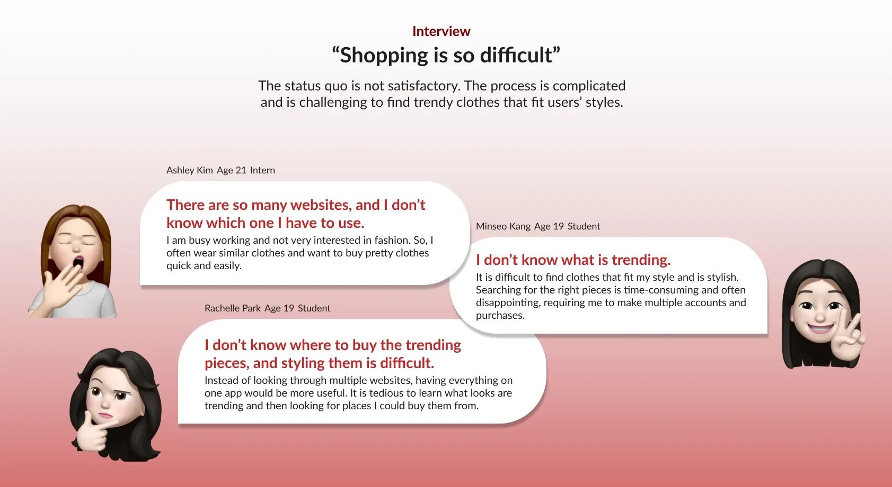
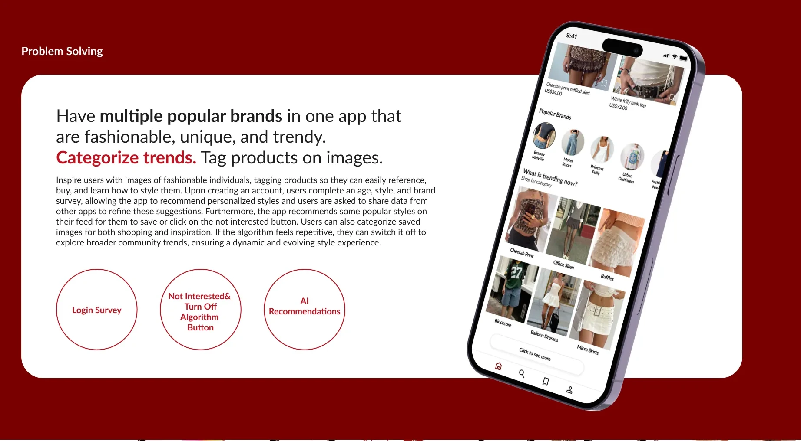

Trendy.
Beauty & fashion trend app
- User Research
- App Design
- Branding

Trendy curates the latest beauty and fashion products in one place, so young women can discover trends, find inspiration and shop in a single app.
Keeping up with trends takes hours of searching across many platforms.
make discovering and shopping trends fast and enjoyable?
My role
A solo project: I took Trendy from problem to finished interface.
Research
User interviews, competitor analysis and a journey map.
Define
A target persona and an as-is / to-be comparison.
Brand
Logo, type and a bold red color system.
Design
Wireframes and the final mobile screens.
What users told me
Interviews showed the status quo was tedious: too many sites, unclear trends and no idea where to buy.

Competitor research
I compared Pinterest, Instagram and Cider across home, search, categories and purchase.

Insight
For Trendy
Saved inspiration gets lost in one long list
Let users sort saved images into boards
Products in inspiration photos can’t be bought
Make products in reference photos purchasable
Trends are hard to browse by type
Categorize trends, with images of how people style them
Who it’s for

As-is → to-be

User journey
Mapping emotions from opening the app to buying showed where frustration peaks, and where Trendy can help.

The solution

Discover trends
Popular brands and the latest products in one place.
Find inspiration
Trends sorted into categories, saved to your own boards.
Shop seamlessly
Products tagged in photos, from trend to purchase.
Brand
A deep red that is bold and trendy, with Lato for clean, readable type.

Final screens